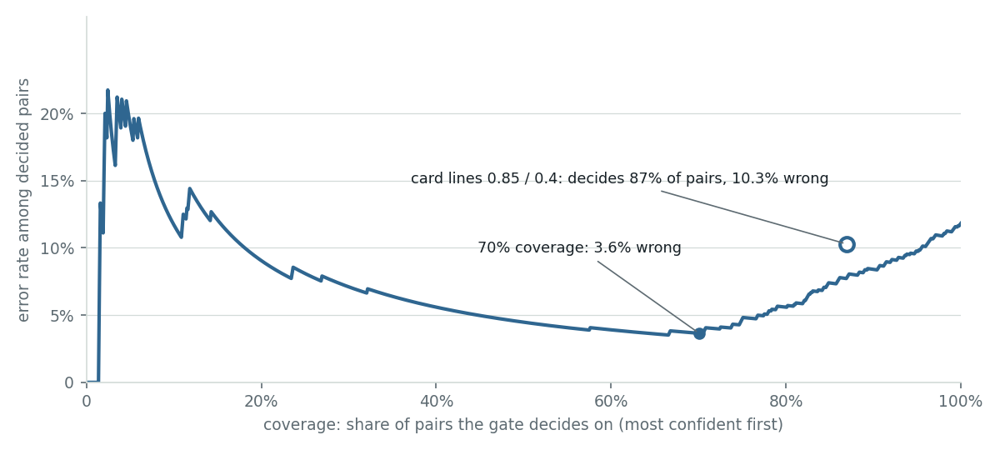
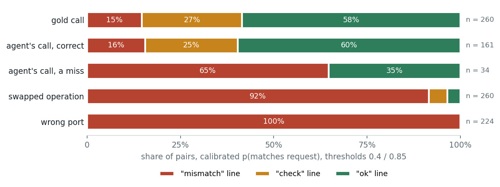

Add a calibrated yes/no to your agent's confirm dialog
You run a local instruction-tuned model behind an agent that proposes actions a human confirms. Eight steps turn that same model into one calibrated gate question on the confirm card; each step below shows the jevlet call that does it and the number the study measured there.
llama-server. Every accuracy and calibration number was produced on the development host with the same GGUF weights that run on the board; the board contributed latency only. The gate pairs come from the 260 canonical and paraphrase rows written by the application team; the study's LLM-authored rows (human review pending) feed the router battery, not the gate. N is in the hundreds, so a few points either way is noise.One turn, end to end
What you get
| gate backend | AUROC | ECE raw → cal | confusions flagged | correct flagged | dangerous accepted |
|---|---|---|---|---|---|
| Qwen3-4B readout · all 939 | 0.952 | 0.108 → 0.030 | 15 / 20 | 30 / 151 | 1 / 156 |
| Qwen3-4B readout · 217 held-out | 0.967 | 0.145 → 0.075 | 2 / 2 | 10 / 37 | 0 / 38 |
| Qwen3.5-0.8B readout, thinking off · 939 | 0.879 | 0.119 → 0.047 | 13 / 20 | 36 / 151 | 25 / 156 |
| Qwen3.5-0.8B readout, default template · 939 | 0.500 | 0.552 → 0.154 | 0 / 20 | 0 / 151 | 156 / 156 |
Columns, at p = 0.5 after scaling: real command confusions flagged, correct calls false-flagged, dangerous negatives accepted (140 swaps + 16 real confusions). Wrong-port negatives accepted: 0 of 224 for the 4B, 32 of 224 for the 0.8B with thinking off, 224 of 224 for its default template, which is the failure of step 8 (label mass 0, every pair at p(yes) = 1). One gate question costs 3.1 s on the board's CPU and 1.32 s on the development host for the 4B, 0.32 s for the 0.8B. Held-out = the 217 pairs from the encoder study's held-out groups. The fine-tuned 150M encoder answers the gate in 183 ms on the board but did not learn it (AUROC 0.53 to 0.65), so the gate stays with the decoder readout.
STEP 1
Run llama-server for the readout
The readout needs three things from the serving path: the log-probabilities at the first generated position, a max_tokens that is honored, and a prefix cache. The compiled NPU runtime the agent runs on has none of them: measured live, GenieX v0.4.0 returns "logprobs": null, answers a one-token request with three tokens, and reports cached_tokens: 0. On that path a typed question can only return a text label, with no probability to calibrate. Upstream llama-server has all three on every backend, so the readout runs beside the agent on the CPU with the same GGUF the study measured.
What the backend sends per question is one chat completion. The flags are the whole trick, so here is the body exactly as jevlet/backends/llamacpp.py builds it:
| serving path | logprobs | cache | max_tokens | typed decision |
|---|---|---|---|---|
| GenieX v0.4.0, compiled W4A16 (the production agent) | none | none | ignored | text label only |
| llama-server on the board CPU, beside the agent | yes | yes | honored | yes, at CPU prefill speed |
| llama-server, Hexagon backend | yes | yes | honored | yes; built, not deployed; cannot share the NPU with the agent |
STEP 2
Write the gate question as a NOUL
A NOUL (a yes/no question answered with one probability) over a three-line state. The state is the operator's request, the proposed call with its parameters, and the catalog's one-line description of that command; the description is what lets the model compare "cut PoE power" with "shuts the interface". The question goes in the system message with its two criteria and the answer format; the state goes in the user message. Labels are the single tokens Yes and No, so one generated position carries the whole answer.
That is the study's final phrasing, quoted from bench/netops.py; step 8 shows what an earlier phrasing did to the operating point. The state the call above produces, and the system message the backend renders from the question, are these (the domain hint is one framing sentence prepended to every system message):
STEP 3
Read the answer
The backend reads top_logprobs at the first generated position, lowercases and strips each token, sums the mass on the yes variants and on the no variants, reports the total as label_mass, and renormalizes over the two labels. It returns the probabilities in option order, [p_no, p_yes], and the log-probabilities they came from, so step 5 can rescale them without another call. A label mass below 1 is a format failure (the model wanted to say something else), not a low probability; treat it as a missing answer.
For a NOUL the backend sends exactly one request whatever rotations says. For a CHOICE question (which of K options) the options get the letters A, B, C…, the option list is rotated cyclically rotations times, each rotation is one request, and the distributions are averaged in option space; the answer also carries Jev's confidence, (K · max p − 1) / (K − 1), 1 for a point mass and 0 for uniform. The study used three rotations for the router questions because a single ordering flips a large share of answers on the hard rows (step 8). Batch rotation-major, all states for rotation 0 then rotation 1, so the cached system prompt is reused.
STEP 4
Label a few hundred pairs from your own traffic
A pair is a request, a proposed call and a label. The label is semantic: 1 if the proposed command is the expected command and every expected parameter matches, 0 otherwise. A format slip that names the right command in the wrong slot with the right parameters is a 1, even though the agent's end-to-end grade calls it a miss. The study's 939 pairs come from three places, all built from the 260 canonical and paraphrase requests:
- 195 real calls of the generative agent on the paraphrases (151 correct, 44 not). Of the 44, 20 are command confusions (16 of them dangerous), 13 run diagnostics instead of the requested call (6 reads, 7 writes), 1 has a wrong parameter; the 10 format slips are labeled 1. The gate is scored on these 34 semantic misses.
- 260 gold calls, one per request, labeled 1.
- 484 synthetic negatives: 260 swapped operations from the table below (140 land on a dangerous pair; with the agent's 16 real dangerous confusions that makes 156 dangerous negatives) and 224 wrong-port variants that keep the command and move the port to
b % 12 + 1.
| expected command | swapped negative | dangerous pair |
|---|---|---|
| disable_port · enable_port | configure_poe_mode {mode: disable · enable} | yes |
| configure_poe_mode | disable_port or enable_port, by mode | yes |
| configure_access_vlan | configure_trunk_allowed_vlans, same VLAN | yes |
| configure_port_speed | disable_port | yes |
| configure_poe_power_limit | configure_poe_mode {mode: disable} | yes |
| configure_port_duplex | configure_port_speed {speed: 100} | no |
| set_port_description | disable_port | no |
| show_port_status ↔ show_poe_status · show_all_ports_status ↔ show_poe_power_budget | the other one | no |
| show_vlan_config · show_system_info | show_vlan_membership · show_vlan_config | no |
Two things transfer. First, keep the phrasings mixed: the gate's AUROC by request style was 0.990 on canonical wording, 0.979 verbose, 0.936 indirect and 0.906 casual. Second, the cheapest labels in a deployed system are the card's own clicks: an approved call is a 1 and a denied call is a 0 for the next refit, with the caveat that a human sometimes approves a call that does something other than what was asked; the study used the gold call, not the click.
STEP 5
Calibrate with folds grouped by seed request
Raw next-token probabilities are extreme. On the 939 pairs the raw mean p(yes) was 0.000 on wrong-port negatives and 0.816 on gold calls, and the raw ECE was 0.108. One scalar temperature fixes most of it: fit_temperature grid-searches T over 200 log-spaced points between 0.05 and 50 to minimize negative log-likelihood, and cv_temperature fits it on four of five folds and applies it to the fifth, so every reported probability is out-of-fold. The folds are grouped by the seed request: paraphrases of one seed never straddle a fit fold and an evaluation fold, because a row-wise split leaks the seed's label into the fold it is scored on.
| on the 939 pairs | raw | scaled, out of fold |
|---|---|---|
| ECE | 0.108 | 0.030 |
| Brier score | 0.111 | 0.089 |
| AUROC | 0.952 | 0.949 |
| accuracy at p = 0.5 | 88.2% | 88.2% |
| temperatures, five folds | n/a | 6.45 ×3 · 6.02 ×2 |
| mean p(yes): gold · the agent's real calls | 0.816 · 0.725 | 0.766 · 0.699 |
| mean p(yes): swapped op · wrong port | 0.074 · 0.000 | 0.147 · 0.063 |
Scaling changes what the numbers mean, not which side of 0.5 they fall on: accuracy at 0.5 is identical and the AUROC moves by 0.002 only because each fold has its own T. Report the out-of-fold numbers; for production, fit one T on all labeled rows and apply softmax(L / T), then refit when the log from step 7 has grown.
STEP 6
Pick the operating point from the risk-coverage curve
A threshold is a point on a curve, not a property of the model. Sort the pairs by calibrated confidence, max(p, 1 − p), and let the gate decide on the most confident share first; the risk is the error rate among the pairs it decides on, and the pairs it abstains from get the card's "check" line. The curve below is recomputed from the study's gate receipt with jevlet.metrics.

| confidence ≥ | coverage, cal. | error | coverage, raw | error, raw |
|---|---|---|---|---|
| 0.60 | 96.1% | 10.2% | 99.3% | 11.5% |
| 0.70 | 90.8% | 8.7% | 98.2% | 11.1% |
| 0.85 | 79.1% | 5.7% | 97.9% | 10.9% |
| 0.90 | 70.8% | 4.1% | 97.0% | 10.9% |
| 0.95 | 25.2% | 8.0% | 96.0% | 10.2% |
jevlet.metrics.selective(conf, correct, thresholds) produces this table. The raw columns are the reason step 5 exists: raw confidence clears 0.9 on 97% of pairs and separates nothing.
The card uses two lines rather than one threshold. annotate_proposal writes an "ok" line at p ≥ 0.85, a "mismatch" line at p ≤ 0.4 and a "check" line between. On the calibrated pairs that lands as follows; the "check" band holds 123 pairs, which would be 22.0% wrong if the gate were forced to decide them.

Per action class
The thresholds are arguments of the hook, so they can differ per action. The receipt, split by the class of the proposed command, says where that matters. "Wrong → ok" counts proposals that do not match the request yet clear the 0.85 line; "right → mismatch" counts faithful proposals pushed under 0.4.
| command class | pairs match / no | wrong → "ok" | right → "mismatch" | mean p right · wrong |
|---|---|---|---|---|
| read (show_*) | 130 / 128 | 13 | 5 | 0.88 · 0.23 |
| diagnose (only as a miss) | 0 / 13 | 6 | n/a | — · 0.49 |
| PoE power on / off | 24 / 81 | 1 | 12 | 0.55 · 0.11 |
| access VLAN | 30 / 24 | 0 | 10 | 0.60 · 0.06 |
| port admin down | 34 / 83 | 0 | 4 | 0.76 · 0.08 |
| port admin up | 40 / 32 | 0 | 9 | 0.68 · 0.07 |
| port speed | 62 / 60 | 0 | 13 | 0.70 · 0.07 |
| port duplex | 40 / 25 | 1 | 4 | 0.78 · 0.11 |
| PoE power limit | 33 / 20 | 0 | 0 | 0.84 · 0.06 |
| port description | 28 / 16 | 0 | 6 | 0.74 · 0.07 |
| trunk VLANs (only as a swap) | 0 / 36 | 0 | n/a | — · 0.06 |
On writes the gate is strict: 2 of the 377 wrong write proposals reach the ok line, and it pays with false alarms on the two classes whose wording sits closest to a dangerous sibling, PoE on/off and access VLAN, where half or a third of the correct proposals get the mismatch line.
On reads it is the other way round: 13 of 128 wrong reads reach the ok line, and 6 of 13 "diagnose instead" calls do. So the ok line for reads could sit lower, or the read classes could simply not carry a gate at all, since a wrong read costs a wasted query; the ok line for writes should not move down. Fit the numbers on your own pairs before choosing; per class the study has 13 to 258 pairs, which is enough to see the shape and not enough to place a line to two decimals.
STEP 7
Wire it into the card, never into the executor
The hook is one function. It builds the state, asks the NOUL, and returns a level and a sentence; the card renders the sentence next to the command and leaves the Approve button exactly as it was. Nothing executes on a probability, and Jev's own "act automatically above 0.9" rule is deliberately not applied to device writes.
The card below is a real pair from the receipt, not a mock-up: the agent's own call on one of the paraphrases, a dangerous confusion it actually made, with the probability the calibrated readout gave it.
Raw p(yes) on this pair was 0.002; the fold's temperature moved it to 0.28, still under the mismatch line. The other side of the same seed shows the cost: the gold call for "@sw1 disable poe on port 2", configure_poe_mode {mode: disable, port: 1/2}, came back at 0.17 (raw 0.00004) and gets the same line. It is one of the 38 gold calls below 0.4.
Two details of the shipped hook differ from the benchmark that produced the numbers above, and both are prompt wording: annotate_proposal renders the parameters with Python's dict repr ({'port': '1/2', 'mode': 'disable'}) where the benchmark state used sorted JSON, and its "No means" criterion is the short form ("the effect differs, or the port, value or device differs") without the two examples. Step 8 shows what wording can do to the operating point, so either calibrate on states built by the hook itself or make the hook build them with gate_state and gate_questions.
What to log for the next recalibration
Store the log-probabilities, not only the shown probability: a refit needs the pre-scaling values. The group key is what step 5 folds on; hash the request if you have no seed structure, and if operators repeat themselves, group by the normalized request so a repeat never calibrates itself.
STEP 8
Pitfalls, with the study's numbers
- Thinking templates zero the readout. Qwen3.5-0.8B in its default chat template opens a thinking block as its first generated token: label mass 0, every pair at raw p(yes) = 1.0, AUROC 0.500, 156 of 156 dangerous negatives accepted (140 swaps + 16 real confusions). With
enable_thinking: falsethe same model reaches AUROC 0.879 and flags 13 of the 20 real confusions. Checklabel_masson every call and treat anything below 1 as no answer. - Option order flips CHOICE answers. On the 259 authored rows the 4B's answers change between option orderings on 36% of rows for the tool question and 29% for the command question; the 0.8B flips 95% and 86% on the 260 base rows. Averaging three rotations is worth 4 points of tool accuracy on those rows for the 4B (5.8 for the 0.8B on the base rows, 68.8% to 74.6%) and costs K requests. A NOUL has no order; its equivalent risk is the next item.
- Wording moves the operating point more than calibration does. An earlier phrasing of the gate question, "Does PROPOSAL #1 do what the user asked for in their latest message — the same kind of change, on the same port(s)/VLAN/value, on the same device? Answer no if …", was rerun on the same 400 pairs as the final phrasing in step 2: mean p(yes) on correct proposals 0.71 against 0.80, 21 of 400 decisions flipped at 0.5, AUROC 0.957 against 0.958. The ranking survived, the thresholds did not. (The study's first pass had recorded a 0.6 gap between the two; a controlled rerun attributes most of it to other prompt lines, the missing Yes/No legend above all.) A threshold fitted on one phrasing is void for another, which is also why the two hook drifts in step 7 matter.
- Raw confidence is not a threshold. On the 24-way command question the raw next-token confidence sits in the 0.9 to 1.0 bin at 74% accuracy on the held-out rows (ECE 0.208 → 0.065 after scaling), and 23 of the 40 command errors on the 260 base rows sat above 0.9. On the gate, a raw confidence of 0.9 covers 97.0% of pairs at 10.9% error; the calibrated 0.9 covers 70.8% at 4.1%.
- Latency is per confirmation, and it is seconds on a board CPU. With the legend cached, a router NOUL evaluates 20 tokens and costs 1.24 s on the board's CPU at six threads; the gate state evaluates 52 tokens and costs 3.1 s (p95 3.6 s). On the development host at twelve threads: 0.56 s and 1.32 s. The readout ran beside the NPU agent without measurable interference (a generative turn took 4.43 to 4.52 s idle and 4.32 to 4.33 s under the readout's load). One gate question per proposed write is affordable; a gate per token is not, and the 150M encoder that would answer in 183 ms did not learn the gate.